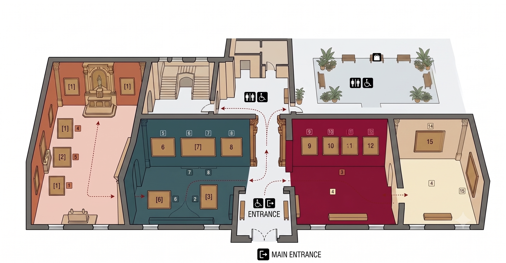

ABOUT
ABOUT THE EXHIBITION
This virtual exhibition brings together works produced in the American viceroyalties to examine how Africans and their descendants were represented in colonial art, and what places they came to occupy in the society of their time. Their presence in viceregal painting was far from marginal. They appear in casta paintings, on folding screens and in secular scenes, in religious iconography, and in portraiture. Yet these images are not faithful reflections of reality. They are constructions that condense the values, fears, and aspirations of those who commissioned and produced them. Casta painting in particular celebrated mestizaje while legitimizing a hierarchy in which skin color, purity of blood (limpieza de sangre), and calidad were meant to fix each person’s place within the colonial order. Against this idealized order, documentary sources reveal a more complex society.
In it, slavery was the normative condition of people of African descent. Even so, enslaved and free men and women took part in domestic and urban labor, in guilds, in the militias of pardos and morenos, and in confraternities devoted to saints such as Saint Benedict of Palermo. Some, like the mulatto painter Juan Correa, attained positions of recognition. Such mobility was exceptional, hard-won, and closely watched by the authorities, who issued ordinances to restrict the autonomy of free Black and mulatto people. The exhibition is organized into four sections: casta paintings, secular scenes, religious images, and portraits. It offers two routes, one for a general audience and one for a specialized audience. It invites visitors to read these works critically, recognizing in their clothing, gestures, and composition both the colonial gaze that produced them and the traces of those who, within its limits, negotiated their place in the viceregal world.
Specific objectives
- To show the presence of people of African descent across pictorial genres: casta paintings, secular scenes, religious images, and portraits.
- To examine casta painting as an ideological instrument that naturalized a hierarchy based on skin color, purity of blood, and calidad.
- To distinguish between the idealized image the works project and the social reality recorded in archives, chronicles, and censuses.
- To make visible the spaces occupied by people of African descent: domestic and urban labor, guilds, the militias of pardos and morenos, and confraternities. The exhibition stresses that slavery was the normative condition and that mobility was exceptional and closely watched.
- To analyze clothing, jewelry, gesture, and composition as sites where calidad, colonial control, and forms of negotiation and resistance intersect.
- To explore the intersection of race and gender, particularly in the representation of women of African descent.
- To offer two routes, one for a general audience and one for a specialized audience, each providing a critical reading accessible to its readers.
FLOOR PLAN

Hover over the numbers to see the artworks • Click for more information
CURATORIAL TEAM
Catalina Salguero
Art Historian and Project Manager
Latin American Colonial Art
Carlos Mendoza
Senior Researcher
Colonial Social History
Ana Torres
Education Coordinator
Cultural Mediation